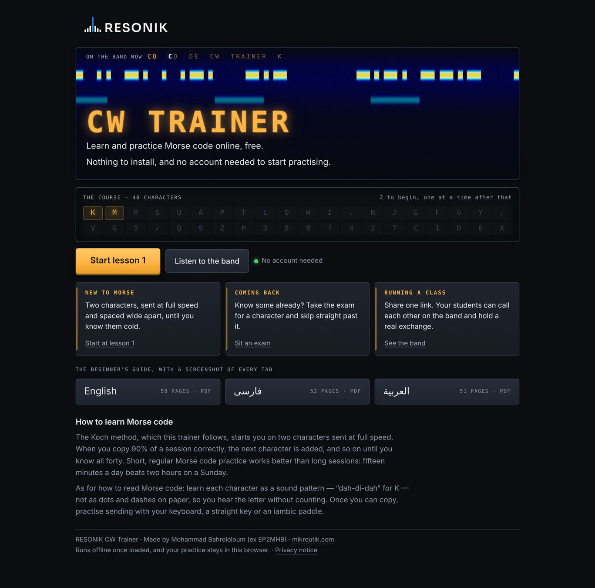
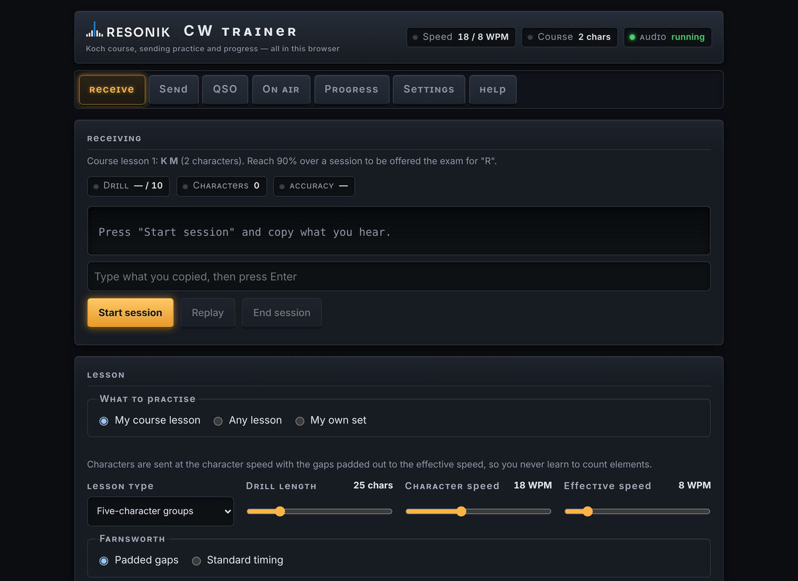

المحتويات
الفصل 2البداية في خمس دقائق
2.1صفحة الترحيب
في أوّل مرّة تفتح فيها التطبيق على جهاز، وقبل التبويبات، تُعرض عليك صفحة تقول لك ما هذا. وخلف الكلام شلّال نطاق يجري، ومحطّة عليه تنادي — CQ CQ DE CW TRAINER K — فأوّل مورس تلقاه هنا هو مورس يُرسَل ويُقرأ، والحروف تظهر فوقه أوّلًا بأوّل.


وتحت النطاق الدورةُ كلّها: أربعون حرفًا، K وM مضاءان وثمانية وثلاثون في الانتظار. وهي صورة صادقة لما أنت مُقبل عليه، وأنفع من جملة تقول «أربعون حرفًا». وأسفل منها زرّ واحد، Start lesson 1، وثلاثة مداخل قصيرة لثلاثة هم الذين يأتون عادةً — مبتدئ في المورس، وعائد بعد سنين، ومن يدير صفًّا — والدليل بلغاته الثلاث.
لا تظهر إلّا على متصفّح لا يحمل أيّ سجلّ تمرين ولم يسجّل فيه أحد الدخول — أي لمن هو جديد على ذلك الجهاز حقًّا. وبعد أن تجيب تمرينًا واحدًا تذهب رأسًا إلى حيث توقّفت، كما كان الأمر دائمًا. وتستطيع فتحها متى شئت من Help ← About، وهي كذلك الطريق لعرضها على غيرك.
وفتحُها لا يُرسل أيّ طلب إلى أيّ جهة: لا خطّ من مكان آخر، ولا صورة، ولا عدّاد. هذا مقصود ويُراجَع قبل كلّ إصدار، لأنّ إشعار الخصوصيّة يقول إنّ من لا حساب له لا يحادث شيئًا البتّة، وصفحة الترحيب هي بالضبط نوع الصفحات التي تُبطل ذلك في صمت.
2.2التشغيل الأول
- اضغط «Enable sound» في الترويسة. كل متصفّح يمنع الصوت حتى تتفاعل مع الصفحة؛ وهذه هي تلك التفاعلة. يخضرّ مصباح Audio ويقرأ «running».
- اذهب إلى Receive واضغط «Start session». لن تسمع سوى حرفين، K وM، مُرسَلَين بسرعة واقعية وبينهما فراغات طويلة. وهذا مقصود — انظر الفصل 3.
- اكتب ما سمعته ثم اضغط Enter. لا تحاول أن تلتقط كل شيء. اكتب ما أمسكتَ به ودع الباقي: مطاردة حرف فاتك تكلّفك الثلاثة التي بعده عادةً.
- أكمِل التمارين العشرة. عند 90٪ فأكثر يُفتَح حرف ثالث. ودون ذلك، أعِد الجلسة.
- انظر في Progress. تُظهر مصفوفة الالتباس أي الحروف تخلط بينها. وذاك ما ينبغي التمرّن عليه بعد ذلك.


خمس عشرة دقيقة يوميًّا خير من ساعتين يوم الأحد. هذا تدريب للأذن، والآذان تتعلّم من التكرار الموزَّع على أيام، لا من الحشو دفعةً واحدة.
2.3لوحة الترويسة

2.4التبويبات

| التبويب | فيمَ هو | يحتاج |
|---|---|---|
| Receive | دورة كوخ وتمارين الاستقبال. وهنا يذهب أكثر وقتك. | لا شيء |
| Send | تمرين الكَبس على هدف، مع تقرير توقيت عمّا أرسلت. | مفتاح، أو لوحة المفاتيح |
| QSO | اتصال كامل مع مشغّل محاكى، في ضجيج النطاق، كتابةً أو كَبسًا. | لا شيء |
| On air | النطاق الافتراضي: تسجيل الدخول، والضبط، ونداء CQ، والعمل مع بقية الأعضاء مباشرةً. | حساب واتصال |
| Progress | كل ما قاسه التطبيق عنك، مع تصدير CSV. | لا شيء |
| Settings | الصوت، وربط المفاتيح، وبياناتك (تصدير، استيراد، حذف). | لا شيء |
| Help | نسخة أقصر من هذا الدليل، في متناول يدك دائمًا، مع جدول مورس قابل للنقر. | لا شيء |
يتذكّر شريط العنوان التبويب الذي أنت فيه (#receive و#air وهكذا)، فالإشارة المرجعية إلى تبويب On air تفتح على النطاق مباشرةً.